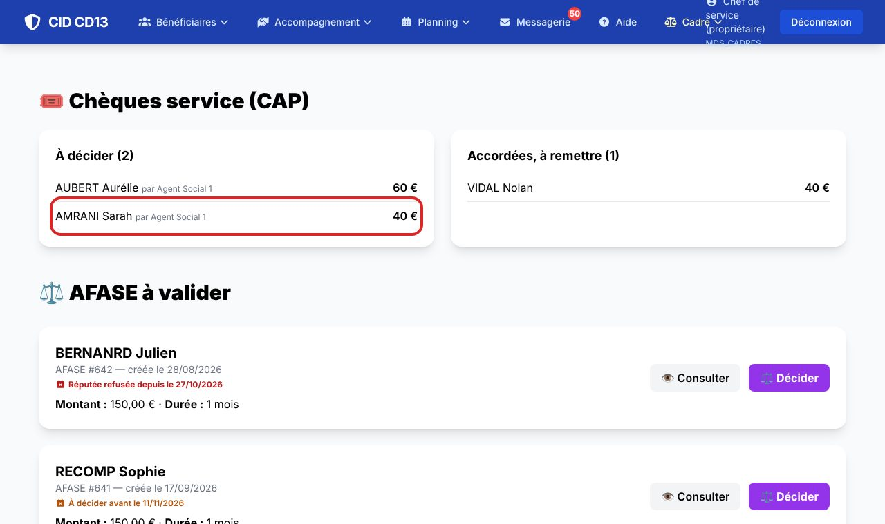
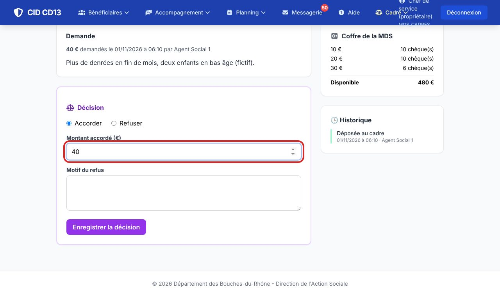
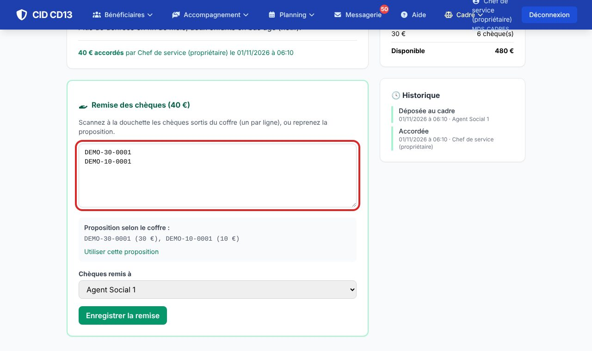
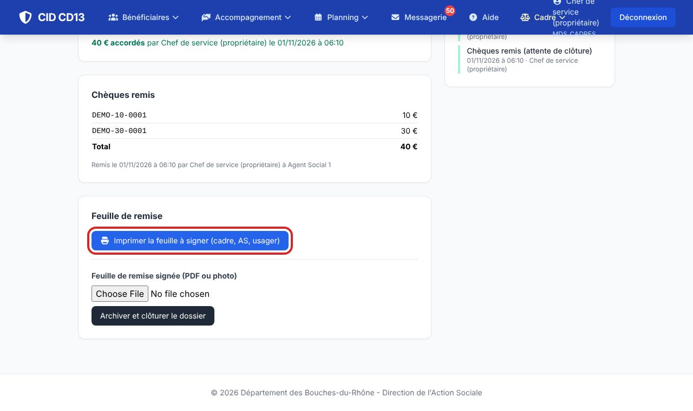
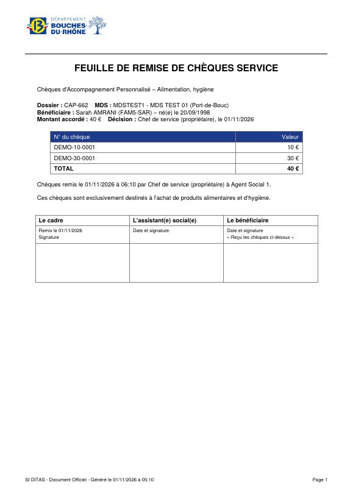
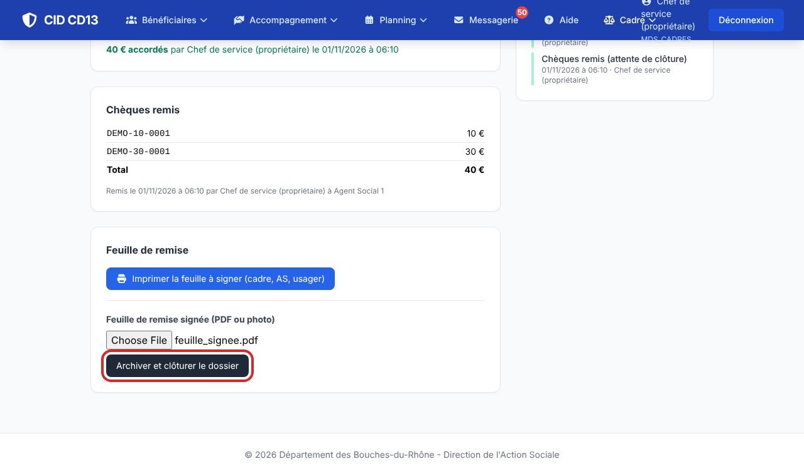
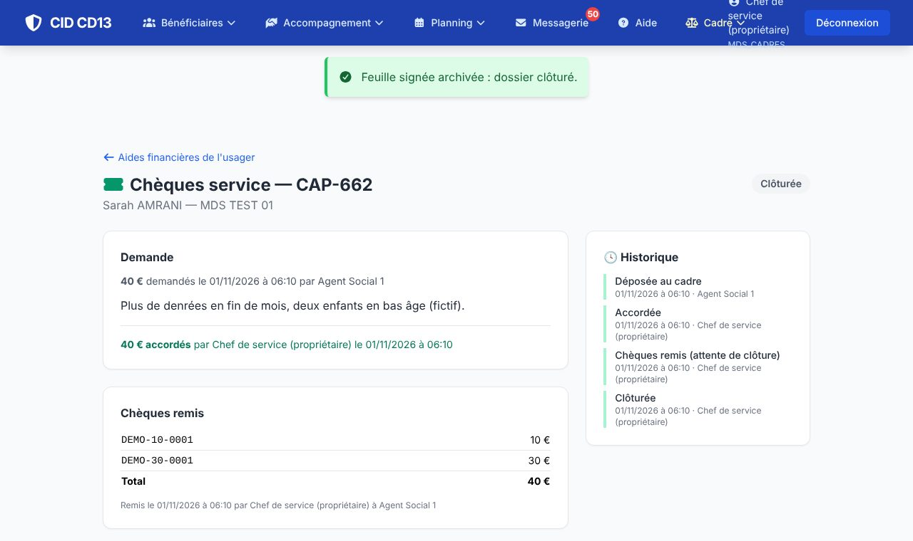

1Décider


- Menu Cadre → AFASE et CAP à traiter : la partie Chèques service (CAP) liste les demandes à décider et celles accordées, à remettre.
- Ouvrez la demande, choisissez Accorder (montant accordé) ou Refuser (motif), puis Enregistrer la décision.
- Le cadre de droite montre le contenu du coffre : ce qui est disponible, par valeur.
2Remettre les chèques

- Sortez les chèques du coffre et scannez-les à la douchette (un numéro par ligne), ou cliquez sur Utiliser cette proposition : CID propose des chèques disponibles pour le montant.
- Choisissez l'agent à qui les chèques sont remis, puis Enregistrer la remise.
Si le coffre ne permet pas de composer le montant, CID l'indique : prévenez le régisseur.
3Faire signer et clôturer




- Cliquez sur Imprimer la feuille à signer : cadre, travailleur social et usager la signent.
- Scannez ou photographiez la feuille signée, déposez-la (PDF ou photo) et cliquez sur Archiver et clôturer le dossier.
- La feuille est rangée dans la GED et le dossier est Clôturé.
Bon à savoir
- Chaque chèque garde sa traçabilité : qui l'a remis, à qui, pour quelle demande.
- Remise exceptionnelle par la paierie : après votre accord, le dossier part au régisseur central, qui saisit les numéros remis.
Et ensuite ?
Cliquez sur une image pour l'agrandir. Le cadre rouge montre où cliquer ou quoi remplir. Toutes les données affichées sont fictives.